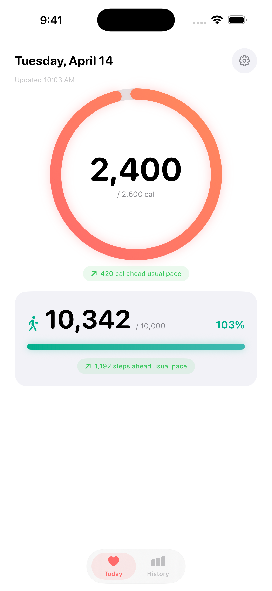

Vitals
App StoreFree calorie and step tracker for iPhone and Apple Watch. Reads from HealthKit — no accounts, no servers, no analytics.

The pitch
Most calorie trackers make you log every meal manually and create an account. I wanted something that just shows what Apple Health already knows — passive tracking, zero friction.
Vitals reads your active energy and steps from HealthKit, calculates a simple total, and displays it on your wrist. No signup, no cloud, no tracking.
Specs
| Platform | iOS 17+, watchOS 10+ |
| Language | Swift 6 with strict concurrency |
| Framework | SwiftUI · HealthKit · WidgetKit |
| Data | Read-only HealthKit access, local only |
| Widgets | Home Screen, Lock Screen, StandBy, watchOS complications |
What mattered
Zero-config setup. Open the app, grant HealthKit permission, done. No onboarding flow, no tutorial, no account creation. The first screen shows yesterday's data immediately.
Watch-first design. The Apple Watch app isn't an afterthought — it's the primary interface. The iPhone app exists for detailed history and settings. Both share a SwiftData cache via App Group.
Widget reliability. Widgets refresh on a timeline, not on open. Background tasks keep the cache warm. The complication updates within 15 minutes of HealthKit changes.
Privacy as a feature. No analytics, no crash reporting, no accounts. The app doesn't know who you are. Reviewers have flagged this positively — it's a selling point, not a limitation.
The best HealthKit app is one you never have to manually log into.